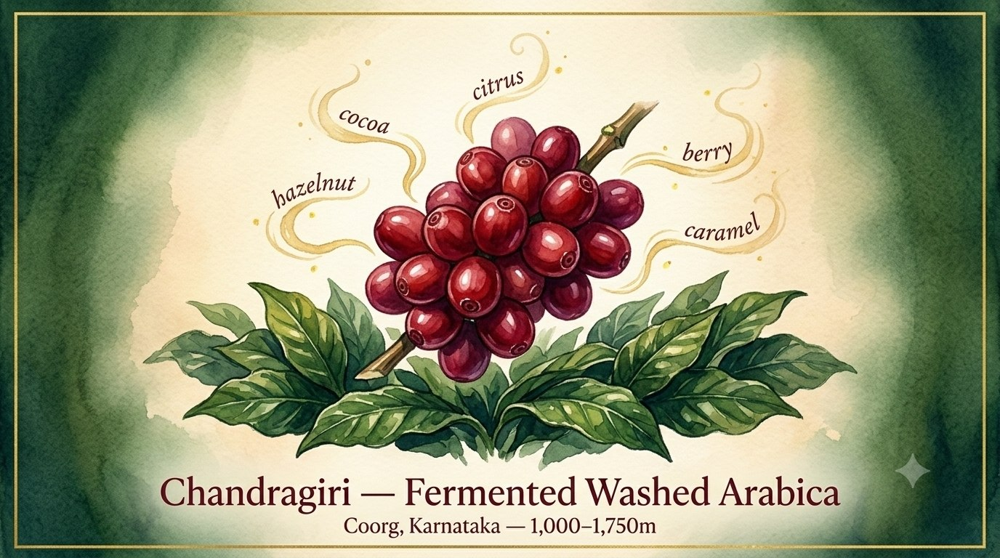
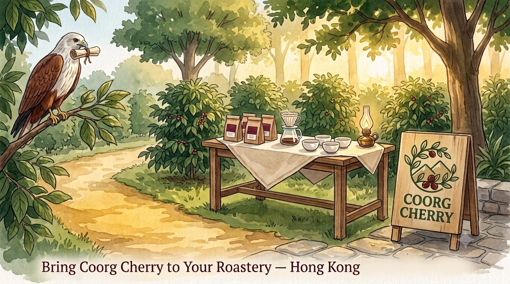
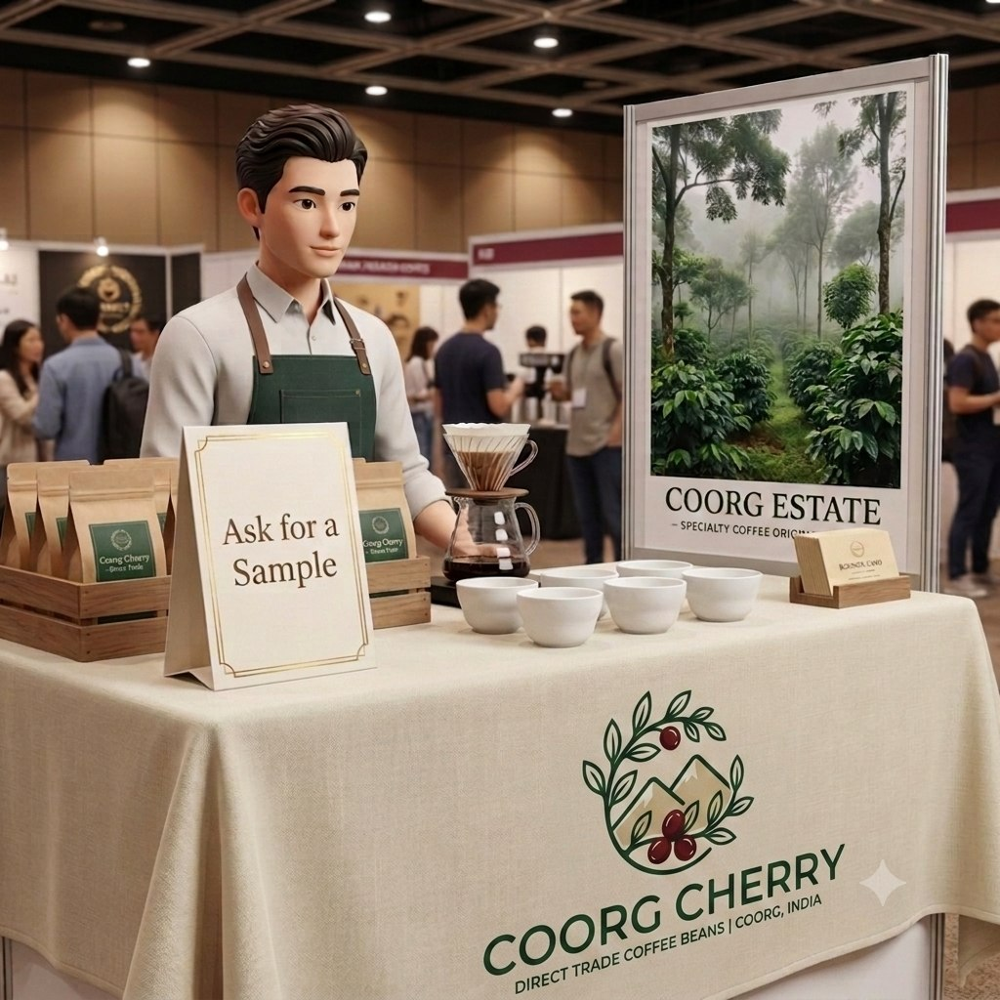

Single-origin Arabica, hand-picked from rainforest canopies 1,000–1,750m up in the Western Ghats.
Meet the EstateCoorg — known locally as Kodagu — sits high in the Western Ghats, a Geographical Indication–certified coffee region that grows nearly 40% of India's coffee between 1,000 and 1,750 metres above sea level. This is not a plantation in the industrial sense: coffee grows here under a living rainforest canopy of rosewood, silver oak, jackfruit and wild fig, intercropped with pepper, cardamom, orange and mango — a forest that produces, rather than a field that's managed.
The Kodava people have farmed this land for generations, and Coorg Cherry's founder is one of them — this is a family relationship with the estate, rooted here long before any contract was ever written. Even our palette carries the inheritance: the burgundy and gold running through this page are drawn from the Kodava chale, the sash worn by Kodava men for centuries before we ever put it on a coffee bag.
Coorg Cherry exists because its founder, Sajan, grew up on this land before he ever sold a bag of it. He is Kodava — a community forged from warrior traditions and deep-rooted hospitality, fiercely proud of the misty hills they have tended for generations. Sajan now lives in Hong Kong, bridging two worlds: the estates he came from and the roasters he serves.
The Kodava carry a rare duality — unyielding strength matched by an instinct to welcome and share. That spirit shapes every relationship here. Direct trade is a commitment built on trust that stretches back long before the first shipment. The grower is paid directly and fairly, through a short chain rooted in community — not a faceless pipeline, but people who know each other, who share a heritage, and who want the same thing: coffee that honours where it came from.

Curated from Coorg's finest estates. Currently featuring Chandragiri — specialty-grade Arabica grown between 1,000 and 1,750 metres in Coorg's rainforest canopy. Washed, fermented, and slow sun-dried, the cup carries cocoa and hazelnut up front, berry and citrus through the middle, molasses and spice in the finish. We don't tell you it's exceptional — we let a roaster's own cupping table decide.
| Varietal | Process | Cup Notes | Score |
|---|---|---|---|
| Chandragiri | Washed | Orange, caramel, milk chocolate, black tea | 84 |
| Chandragiri | Whiskey Barrel Aged | Oak, vanilla, whiskey, cocoa nibs | 84 |
| SLN‑795 | Sugar Ferment Naturals | Brown sugar, toffee, plum, silky mouthfeel | 83 |
| Chandragiri | Fermented Washed | Citrus, peach, jasmine, honey | 82 |
| SLN‑795 | Anaerobic Naturals | Tropical, pineapple, mango, wine acidity | 81.5 |
| SLN‑795 | Naturals | Ripe berries, raisins, hazelnut, sweet | 80.5 |
| Varietal | Process | Cup Notes | Score |
|---|---|---|---|
| Mix | Wine Fermented | Red wine, blackberry, cherry, floral | 83 |
| Mix | Black Honey Sun Dried | Molasses, black grape, dates, syrupy body | 82 |
| Mix | Red Honey Sun Dried | Cherry, raspberry, honey, orange, juicy | 81 |
| Mix | Cinnamon Fermented | Cinnamon, baked apple, clove, orange zest | 81 |
| Varietal | Process | Cup Notes | Score |
|---|---|---|---|
| CXR | Sugar Ferment Naturals | Jaggery, cocoa, roasted nuts, low bitterness | 84 |
| CXR | Honey Sun Dried | Honey, cocoa, caramel, creamy mouthfeel | 84 |
| CXR | Naturals | Dark chocolate, peanut, fig, earthy | 83 |
| CXR | Red Honey Sun Dried | Cocoa, caramel, dates, almond | 81 |
| Mix | Washed | Dark chocolate, almond, caramel, balanced | 81 |
| CXR | Salt Fermented Naturals | Dark chocolate, walnut, umami, black pepper | 80 |
| Old Peridinya | Naturals | Dark cocoa, tobacco, cedar, molasses | 80 |
| Mix | Fermented Naturals | Black cherry, cocoa, rum, dried fruits | 80 |
"A relationship, not a commodity pipeline. Grown by family in Coorg. Delivered by someone who shares the same heritage."

We're based in Hong Kong — reach out anytime. Whether it's green bean samples, a chat about Coorg's coffee heritage, or just talking shop over a cup, we'd love to hear from you. No trade shows. No agents. Just a direct line to someone who knows these estates personally.
Roasters and café buyers — scan to request green bean samples and a direct estate relationship.
